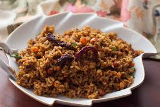
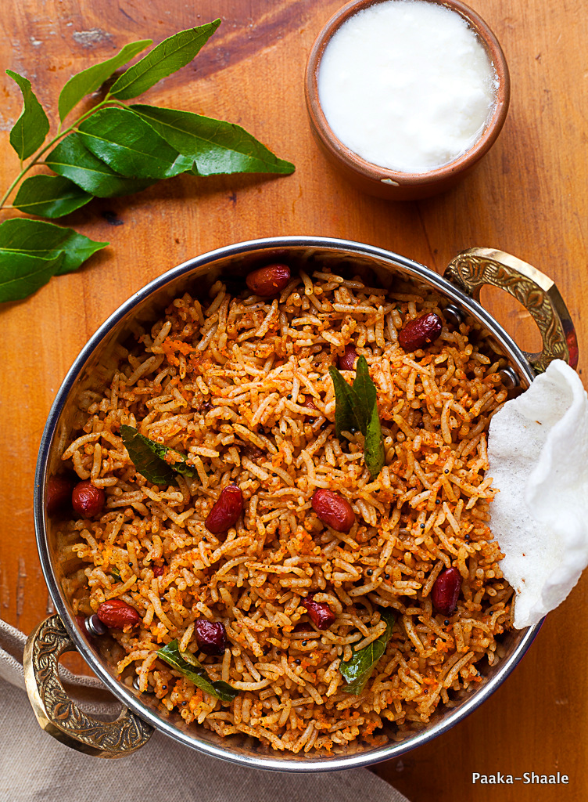

/* website as resource */
about food
Puliyogare is a simple tamarind rice made by tempering precooked rice with spicy tamarind paste.
Puliyogare is a Karnataka style tamarind rice which can be made in a jiffy if you have precooked rice.
It can be served alone or with some happla, sandige, curd or fresh kosambari.
To make puliyogare, rice is precooked to a grainy texture & cooled completely.
Then it mixed with the prepared tempered spice powder known as puliyogare gojju.
why i like
Puliyogare is simple dish and easy to prepare.i like tamrind flavour and tastes spicy,slightly sweet and sour.
ingredients
- Puliyogare Powder
- oil
- groundnuts
steps to prepare
😊
- 🔥heat pan with oil
- add musturd seeds🤏
- when they begin to crackle,add groundnut🥜,dals.Roast them until lightly golden with the help 🥄
- add Puliyogare Powder🤏
- Now add tamarind water and stir ,add salt🧂
- 😋
list of 5 best recepies of Puliyograe
- Iyengar Puliyodharai,Tamil Nadu Style

- Andhra Style Temple Pulihora

- Karnataka Style Puliyogare

- Mysore Iyengar Puliyogare Gojju and Puliyogare Rice Recipe
- Poha Puliohora Recipe